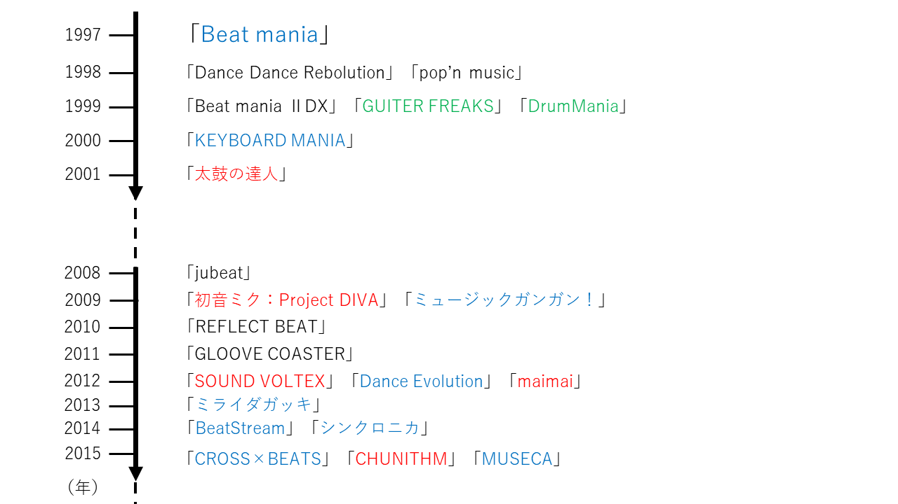

前のページで紹介した以外にもアーケード音ゲーがあります。
アーケード音ゲーは割と歴史が浅いです。始まりは1997年の「Beat Mania」からで、今から約24年前になります。
※赤字は今回紹介した音ゲーです。
※青字は現在サービス終了しているゲーム、または更新されていないゲームです。
※緑字は「ギタフリ」として統合されたため現在単体では置いていないゲームです。
上の図の通り他にもたくさんのアーケード音ゲーがあります。
サービス終了のゲームも多く存在するので現在これほど多くの種類がある訳ではありませんが、やったことがないという方は是非やってみてください！
自分の好きな音ゲーを自由に好き放題解説させていただきました。個人の意見が数多く含まれるので、情報の信憑性は低いと思いますが、私の音ゲーの熱意と魅力が少しでも伝わればうれしいです。
ご閲覧ありがとうございました。
(1)著作者名:株式会社セガ
著作物の題名:CHUNITHM PARADISE
リンク
(2)著作者名:株式会社セガ
著作物の題名:maimai でらっくす PLUS
リンク
(3)著作者名:BANDAI NAMCO Amusement Inc.
著作物の題名:太鼓の達人 ニジイロVer.
リンク
(4)著作者名:Konami Amusement
著作物の題名:SOUND VOLTEX VIVID WAVE
リンク
(5)著作者名:株式会社セガ、Crypton Future Media, Inc.
著作物の題名:初音ミク Project DIVA Arcade Future Tone
リンク
フリー画像のリンク
https://www.irasutoya.com/2014/12/blog-post_5.html
https://publicdomainq.net/child-boy-fist-pump-0050596/